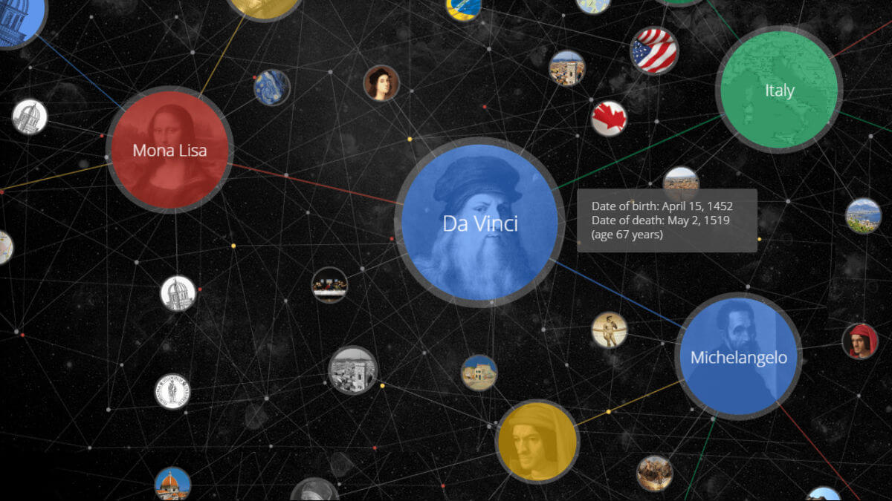

Using Dgraph in Rails
Presented May 9 at Ruby on Rails Sydney
Purpose
- Introduce graph database
- Demo Rails solution
- Share things I learned
Structure
- Graph database
- Dgraph
- Rails Demo
- What I Learned
Graph database
- Nodes and edges
- Edge traverals
- Key-value lookups
Facebook Open Graph

Google Knowlege Graph
Why?
Faster and more natural
- Newsfeeds
- Recommendation engines
- Anomaly detection
Dgraph
- Open source graph database
- Proudly made in Sydney
- Fastest in the market (benchmark)
- The only scalable, native solution
Scalable
- Sharded
- Highly available
- Consistent (Raft)
- Highly concurrent
GraphQL+-
{
user as var(id: u1)
question(id: u1) {
_uid_
question_body
question_title
answer(first: 10) @filter(gt(count(answer_body), 0)) {
_uid_
answer_body
~upvoted @filter(var(user)) {
user_name
}
count(~upvoted)
}
}
}
Using in Rails
GraphOverflow
- 10,000 users
- 20,000 questions
- 30,000 answers
Lessons
Using Dgraph in Rails
No ActiveRecord
Deal with raw JSON
class QuestionsController < ApplicationController
def index
query = %q(
{
...
}
)
client = ::DgraphClient.new()
json = client.do(query)
@questions = json.fetch(:questions, [])
end
Not resource-oriented
<%= link_to "Show", controller: 'questions',
action: 'show', id: question[:_uid_] %>
<%= link_to "Show", @question %>HTTP client only
Get complex data in a single query
Built-in to DB, unlike GraphQL
Insanely fast
Demotritize scalable solutions

Sung